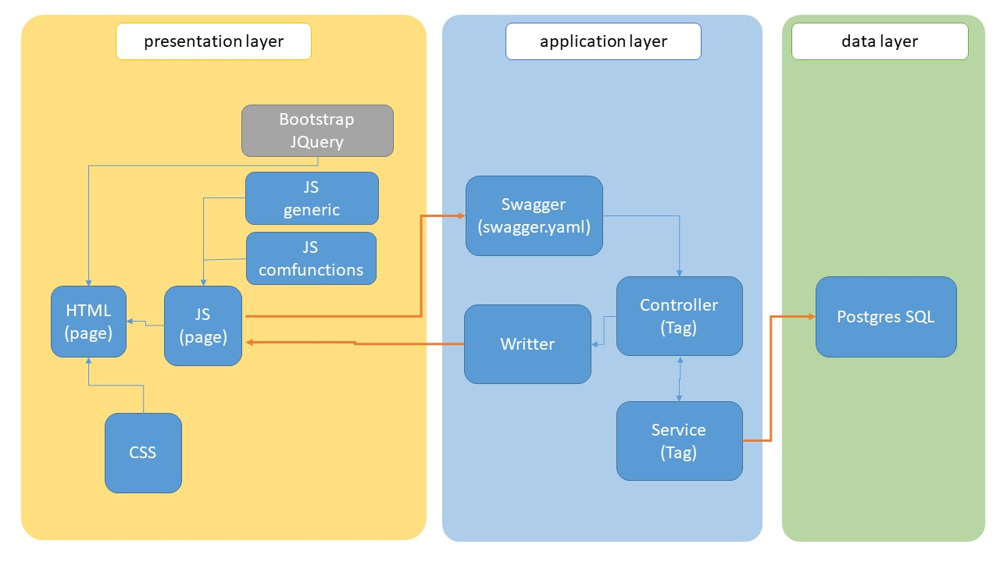
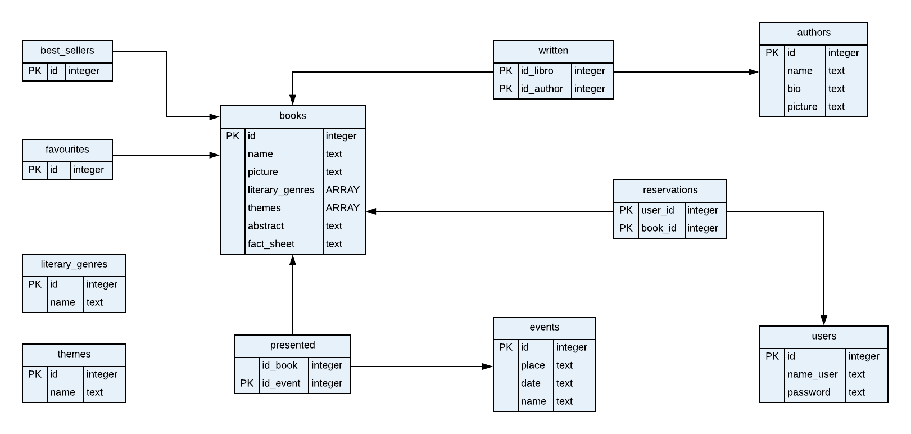
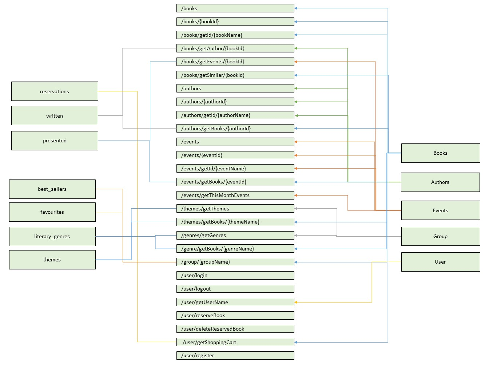

| Member n. | Role | First name | Last Name | Matricola | Email address |
|---|---|---|---|---|---|
| 1 | administrator | Blanca | Luque | 123456 | foo@example.com |
| 2 | member | Carlos | Vega | 917509 | carlos.vega@mail.polimi.it |
| …… |
Describe here, with a diagram, the components of your web application and how they interact. Highlight which parts belong to the application layer, data layer or presentation layer.
How did you ensure that HTML is not rendered server side?
I ensure by obtaining all the dynamics elements throw the API. The calls to the API are all made in the client side and the data that arrives is printed on screen from the javascript of the page.
Describe here to what extent did you follow REST principles and what are the reasons for which you might have decided to diverge. Note, you must not describe the whole API here, just the design decisions.
We have based int REST using mainly interactions of Level 2. We focus in creating more specific functions with the purpouse of reduciong complexity in the presentation layer.
Describe here synthetically, which models you have introduced for resources.
Describe with an ER diagram the model used in the data layer of your web application.
How these map to the OpenAPI data model?
Describe here which tools, languages and frameworks did you use for the backend of the application.
Describe here:
How did you make sure your web application adheres to the provided specification?
Why do you think your web application adheres to common practices to partition the web application (static assets vs. application data)
Describe synthetically why and how did you manage session state, what are the state change triggering actions (e.g., POST to login etc..).
Which technology did you use (relational or a no-SQL database) for managing the data model?
Describe here how development tasks have been subdivided among members of the group, e.g.:
Describe here if you have found relevant APIs that have inspired the OpenAPI specification and why (at least two).
First of all we have based our the API in the example we worked in class. From it we obtain the main structure and some ideas.
We also analyse some APIs that used coockies like example that used techniques of autentication, but finally we didn’t follow this technique.
What was the most important thing all the members have learned while developing this part of the project, what questions remained unanswered, how you will use what you’ve learned in your everyday life?
-Carlos learned: a) To use Swagger and the OpenAPI specification b) How to work with SQL databases. c) Use coockies Sessions
And would like to learn more about techniques of logging and security with users and sessions.
About his everyday life, he understands better the web technologies that are under the pages and he is more awake.
Examples: